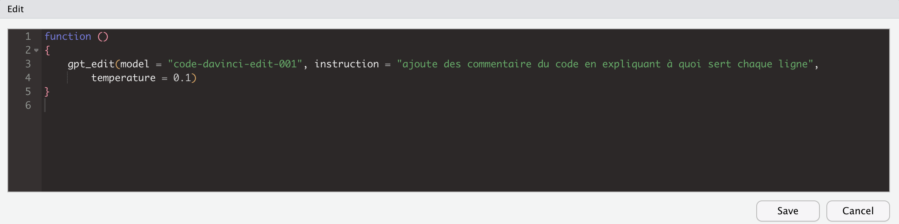

install.packages("gptstudio")Introduction
L’utilisation de l’intelligence artificielle (IA) pour diverses applications est en constante évolution ces dernières années. Avec l’émergence de la génération de langage naturel assistée par l’IA, il est maintenant possible de développer des systèmes qui peuvent comprendre et générer du texte de manière similaire à un humain. Dans cette optique, l’API Chat GPT développée par OpenAI est devenue une ressource précieuse pour les développeurs qui cherchent à incorporer cette technologie dans leurs projets.
En utilisant la library gptstudio, les développeurs peuvent facilement accéder à l’API Chat GPT et utiliser cette puissante technologie pour améliorer leurs applications. Dans cet article, nous allons explorer l’utilisation de la bibliothèque pour faire appel à l’API Chat GPT et discuter des avantages qu’elle peut apporter aux projets de développement de langage naturel.
Installation
Une fois la library installée, nous avons besoin d’une API Key qu’on va récupérer sur notre compte OpenAI.
Cette API Key on peut la définir manuellement :
Sys.setenv(OPENAI_API_KEY = "<APIKEY>")Ou l’ajouter dans notre fichier .Renvion en ouvrant l’éditeur :
require(usethis)
edit_r_environ(scope = "project")Puis en ajoutant notre Key :
OPENAI_API_KEY= "<APIKEY>"Utilisation
library(gptstudio)Les addins de cette library permettent plusieurs choses
Echanger directement avec Chat GPT
Modifier du code directement en source selon ce que l’on souhaite
Vérifier la grammaire
Commenter du code dans une sélection
Petit bémol, le package est configuré en anglais, donc quand j’utilise l’addin des commentaires (très pratique), il va me commenter le code en Anglais. Comment faire si je veux l’avoir en Français ou dans une autre langue ?
On va donc éditer le package :
trace(addin_comment_code, edit = T)Cela va nous ouvrir une popup :
Et il nous suffit de remplacer la ligne de l’appel à l’API par un input en Français ou la langue désirée :

A noter que le changement est temporaire (uniquement le temps de la session R). Pour changer définitivement la fonction il faut prendre la source du package, modifier le code et installer le package avec sa propre source, et/ou contribuer au développement du package.
Une fois que tout est configuré, il ne reste plus qu’à coder (ou regarder la library coder pour nous).